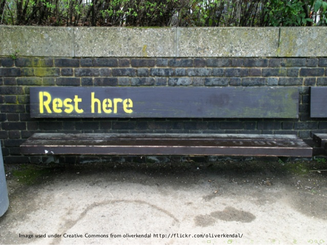

Les API Rest
@ Rapp Meetup
Aujourd'hui,
on constate une tendance au découplage front/back :

- ...
On va donc mettre en place une interface de communication entre ces éléments : une API.
C'est quoi une API ?
- un ensemble normalisé de classes, méthodes, procédures et fonctions
- programme founisseur et programme consommateur
- un objectif ===> interopérabilité
Une api peut-être accessible au niveau programmation ( language, bibliothèques, plugin ... ), matériel (embarqué, drivers, imprimantes... )et au niveau réseau, web compris.
Des types API web :
SOAP
RPC
Json-RPC
Rest
...
API REST : un ensemble de Ressources et d’URI
Pour comprendre le paradigme subjacent à une API Rest, il faut envisager le web comme un ensemble de ressources.
Chaque ressource dispose de plusieurs représentations< br />Mais quelque soit sa représentation, une ressource est identifiée par une URI unique
REST (pour REpresentational State Transfer) est un style d’architecture proposant l’exposition de ressources.
REST n’est pas un standard comme le HTML 5. Comme le principe MVC, il s’agit d’un style d’architecture. Les API REST peuvent être réalisés en .NET, Php, Javascript ou Python… Mais quel que soit le language utilisé, le but est d’exposer des ressources.
Le premier principe d’architecture REST consiste donc à identifier les ressources avec des URI. L’identification des ressources est la pierre angulaire d’une architecture REST.
La définition des URI ne peut donc être la conséquence d’un développement. Les URI doivent être spécifiées au moment de la conception.
Le language Rest : les verbes Http
Une fois que l’on sait comment accèder à une ressource (on connait son URI), on va utiliser le protocole HTTP pour interagir avec cette ressource.
Le deuxième composant de l’architecture REST est le protocole HTTP.
Exemple d’une requète vers http://www.rappfrance.com :
GET / HTTP/1.1
Accept: */*
Accept-Encoding: gzip, deflate, compress
Host: www.rappfrance.com
User-Agent: HTTPie/0.8.0
les verbes (méthodes) http :
- GET
- POST
- PUT
- PATCH
- DELETE
- HEAD
- PATCH
- TRACE
La réponse (HTTP Status Codes) http :
- 2xx Success (200: OK, 201: created, 204: No Content)
- 3xx Redirection
- 4xx Client Error (400: Bad Request, 401: Unauthorized, 403: Forbidden, 409: Conflict)
- 5xx Server Error
Une interface uniforme
Un example d'API: le wsw rapp
La problématique : des gens et des services
un plan d'adressage
Même si, en soit, REST ne force pas un style d’URIs particulier, l’usage et la pratique montrent qu’un plan d’adressage clair, lisible et consistant favorisent l’adoption d’une API, sa facilité de compréhension et d’utilisation.
Suivant le fameux principe « Cools URIs don’t change », il faut choisir évidemment des URLs agnostiques du point de vue de la technologie (ie., pas de « .php » dans l’url) ou de tout autre élément susceptible de changer dans le temps.
C’est une bonne pratique pour le code, et c’est également une bonne pratique pour les APIs : exposer des urls, des noms de champs ou des paramètres en anglais. Cela facilitera l’adoption large de l’API, en ne faisant pas de la langue une barrière forte.
- wsw.rappfrance.com/api/dps en GET => obtenir la liste des départements.
- wsw.rappfrance.com/api/dps en POST => créer un nouveau département
- wsw.rappfrance.com/api/dps/id en GET => obtenir le détail d’un salarié
- wsw.rappfrance.com/api/dps/id en PUT/PATCH => mettre à jour le détail d’un salarié
- wsw.rappfrance.com/api/dps/id en DELETE => supprimer une personne
- wsw.rappfrance.com/api/employee en GET => obtenir la liste complète des salariés
Implémentation de l'API : A la mano, mais il existe des frameworks : sails.js par exemple
Live Coding